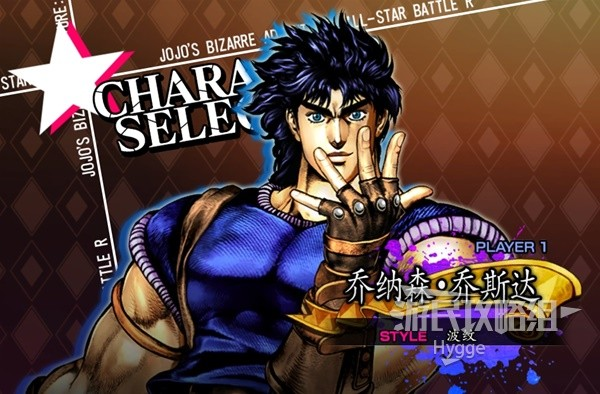
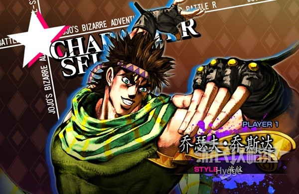
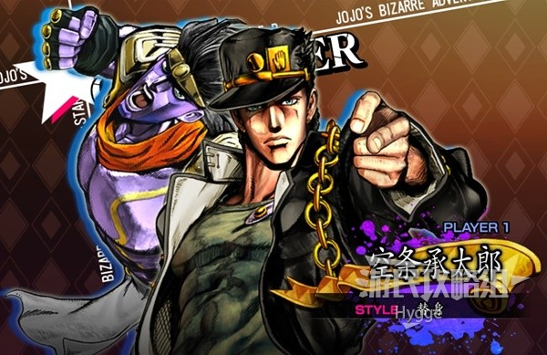
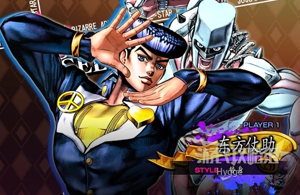
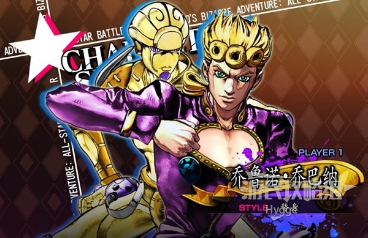
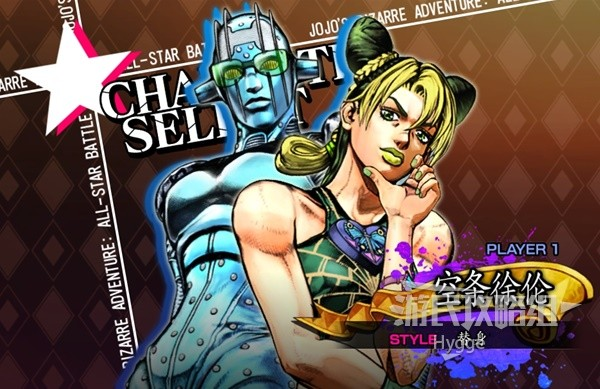
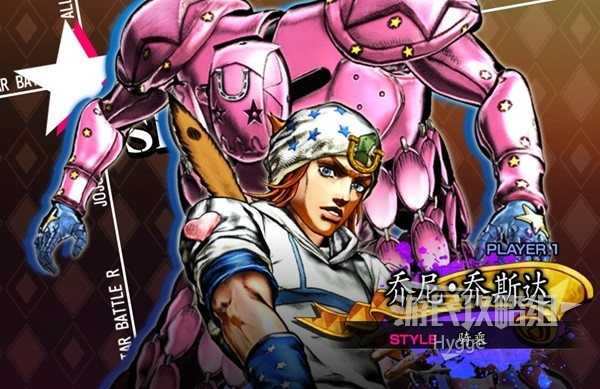
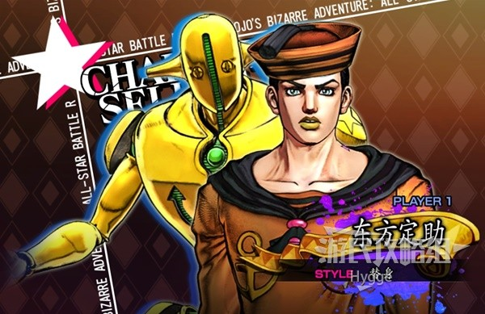

第一部~第七部主角介紹

初代JOJO，個性正直善良，擅長使用波紋戰鬥

第二代JOJO，個性機智幽默，擅長運用波紋與計謀戰鬥

第三代JOJO，個性沉著冷靜，替身為白金之星，擁有強大的力量與速度

第四代JOJO，個性溫柔且重視朋友，替身為瘋狂鑽石，能夠修復物體與治療他人

第五代JOJO，擁有堅定的信念，夢想是成為流氓巨星

第六代JOJO，空條承太郎的女兒，個性勇敢堅強。替身為石之自由，能將身體化為線進行戰鬥

第七代JOJO，原本是天才騎師，因意外導致下半身癱瘓。參加橫跨美國的賽馬比賽，使用替身"牙"進行戰鬥。

第八代JOJO，失去記憶的神祕青年，為了尋找自己的身世而展開冒險。替身為柔軟且濕潤，能利用泡泡奪取物體的性質